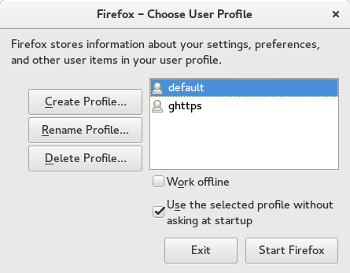
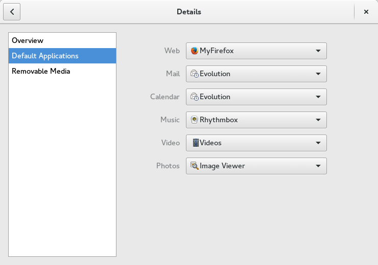
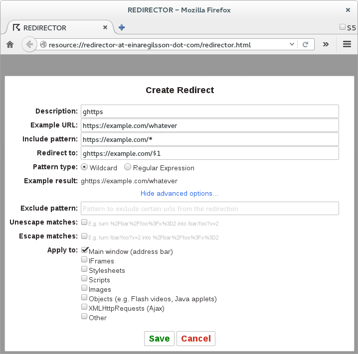
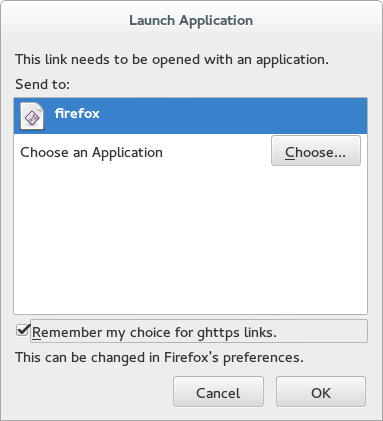

We’re constantly clicking on all sorts of different URL’s throughout the day. These clickable links appear in webpages (including in “web apps” like gmail) in mail clients like Evolution, in terminals such as GNOME-terminal, and any other GTK+ app on your GNU/Linux desktop. I wanted to perform custom actions when arbitrary URL’s are clicked, including running certain links in separate Firefox profiles. There are a bunch of different steps you have to do to get this working, but it should be easy to follow along. I’m doing all of this on Fedora 23, but it should work on other GNU/Linux environments.
Firefox profiles:
Firefox supports multiple profiles in the same user session so that different users can share a session, or so that a single user can separate tasks into different environments. I’m interested in the latter use case. To add a new profile it’s recommended to close firefox completely, but I didn’t find this to be necessary. When I do close firefox, I like to surprise it with a:
killall -9 firefox
which will also cause any unsaved data in your browser to be lost. To create a new profile, now run firefox with -P:
firefox -P
This will open up a friendly dialog where you can add a new profile. After you’ve done this, my dialog now looks like:
|  |
| A view of my firefox profiles as shown by running: firefox -P |
to test that it is working, run firefox from the command line:
$ firefox https://purpleidea.com/
$ firefox -P ghttps https://github.com/purpleidea/
$ firefox https://twitter.com/#!/purpleidea
$ firefox -P ghttps https://www.gnu.org/philosophy/free-sw.html
You should get two separate sessions, where the commands with -P ghttps should be in your new “ghttps” session (or whatever you named it). Internet searches seem to report that some users can’t run two sessions at the same time without including the –no-remote option, but I didn’t seem to need it. YMMV.
Firefox launcher:
When you run firefox, it usually runs /usr/bin/firefox. I want a more clever launcher, so I’ve created a new bash script named ~/bin/firefox which is part of my path. The contents of this file are:
#!/bin/bash
# run firefox from a terminal, without being attached to it; similar to nohup
# thanks to @purpleidea from https://purpleidea.com/
# TODO: a better argv parser and more flexible url matching semantics
# NOTE: first close firefox and make a new profile with `firefox -P`, then set:
protocol='ghttps' # name of fake protocol
profile='ghttps' # name of your new firefox profile
prefix='https://example.com/'
argv=("$@")
argc=$(($# - 1))
url=''
if [ $argc -ge 0 ]; then
url=${argv[$argc]}
# avoid recursion!
if [[ "$url" == "$protocol"* ]]; then
url="https${url:${#protocol}}" # s/ghttps/https/
argv[$argc]=$url # store it
fi
fi
#echo $url
#echo "`date` ${argv[*]}" >> /tmp/firefox.log
# use a separate profile for special links
if [ "$url" != "" ] && [[ "$url" == "$prefix"* ]]; then
# firefox with profile
{ `/usr/bin/firefox -P "$profile" "${argv[@]}" &> /dev/null`; } &
else
# normal firefox
{ `/usr/bin/firefox "${argv[@]}" &> /dev/null`; } &
fi
Make sure the file is executable with chmod u+x ~/bin/firefox and in your $PATH. Now whenever you run the firefox program, it will automatically run firefox with a profile that corresponds to the pattern of URL that you matched. Feel free to improve this script with a more comprehensive pattern to profile correspondence mechanism.
Default applications:
Whenever any URL is clicked within GNOME, there is a central “Default Applications” setting which decides what application to run. My settings dialog for this control now looks like:
|  |
| What the GNOME Settings->Details->Default Applications dialog looks like after I made the change. |
I had to change the “Web” handler to be a “MyFirefox” instead of the previous default of “Firefox”. Those applications are listed in .desktop files which exist on your system. The system wide firefox desktop file is located at: /usr/share/applications/firefox.desktop and although the path to the executable in this file does not set a directory prefix, it unfortunately does not seem to obey my shell $PATH which includes /bin/.desktop files include /bin/ in their search, then I’d really appreciate it if you left me a comment!
To work around the $PATH issue, I copied the above file into ~/.local/share/applications/firefox.desktop and edited it so that the three Exec= commands include a path prefix of /home/james/bin/. I also renamed the Name= entry so that it was visually obvious that a different .desktop file was in use. This will replace the firefox launcher throughout your desktop and as well in the “Default Applications” menu.
An excerpt of my file showing only the changed sections now looks like:
[Desktop Entry]
Name=MyFirefox
Comment=Browse the Web better
Exec=/home/james/bin/firefox %u
Actions=new-window;new-private-window;
[Desktop Action new-window]
Name=Open a New Window
Exec=/home/james/bin/firefox %u
[Desktop Action new-private-window]
Name=Open a New Private Window
Exec=/home/james/bin/firefox --private-window %u
Changing the name is optional, but it might be instructional for you.
It’s important that you not rename the file, because only files which are listed in one of the GNOME mime list files will show up in the “Default Applications” chooser. Once you’ve created the file, you can check in these settings to ensure it’s set as the default.
I forget if you need to close firefox, and logout and then back in to your GNOME session for this to work, so if things aren’t working perfectly by now, ensure you’ve done that once. You can test this by clicking on a link in your terminal and checking to see that it opens the correct firefox.
Redirecting internal firefox links:
Everything should now be working perfectly, until you click on a link within firefox which doesn’t redirect to your shell firefox wrapper. We want this to be seamless, so we’ll have to hack into the firefox API for that. Thankfully there’s a plugin which already does this for us, so we can use it and avoid getting our hands too dirty! It’s called “Redirector”. Install it.
Once installed, there is a settings dialog which can add some pattern matching for us. I set up a basic pattern that corresponds to what I wrote in my ~/bin/firefox shell script. Here’s a screenshot:
|  |
| A screenshot from the firefox Redirector plugin. |
You can conveniently import and export your redirects from the plugin, and so I’ve included the corresponding .json equivalent for your convenience.
Does everything look correct? Take a second to have a closer look. You might think that I made a typo in the “Redirect to:” field". There’s no such protocol as ghttps you say? That’s good news, because its use was intentional.
Custom protocol handlers:
Running an external command in response to certain links is what allows them to open external programs such as mail clients, PDF viewers, and image viewers. While some of these functions have been pulled into the browser, the need is still there and this is what we’ll use to trigger our firefox shell script. It’s actually important that we make an external system call because otherwise there would no way for a link in the default browser profile to open in browser profile number two. Running any such command is only possible with a custom or unique protocol. You might be used to seeing https:// for URL’s, but since these are captured by the browser as native links, we need something different. This is what the ghttps:// that we mentioned above is for.
To add a custom protocol, you’ll need to dive into your browsers internal settings. You can do this by typing about:config in the URL bar. You’ll then need to right-click and add four new settings. These are the settings I added:
(string) network.protocol-handler.app.ghttps; /home/james/bin/firefox
(boolean) network.protocol-handler.expose.ghttps; false
(boolean) network.protocol-handler.external.ghttps; true
(boolean) network.protocol-handler.warn-external.ghttps; true
Please note that the leading values (in brackets) are the types that you’ll need to use. Omit the semicolons, those separate the key and the corresponding value you should give it. You’ll naturally want to use the correct path to your firefox script.
For reasons unknown to me, it’s required to set these variables, but the protocol handler still requires that you manually verify this once. To do this, I have provided a sample link to my blog using the fake ghttps protocol:
When you click on it the first time, you should be prompted with a confirmation dialog that asks you to reconfirm that you're okay running this protocol, and the path to the executable. Browse to the~/bin/firefox and click "Remember my choice for ghttps links". The dialog looked like this:
|  |
| You should only need to deal with this dialog once! |
If you’re using a different protocol, can you make a simple HTML file and open it up in your browser:
<html>
<a href="ghttps://purpleidea.com/">ghttps://purpleidea.com/</a>
</html>
At this point you may need to restart firefox. Your new protocol handler is now installed! Enjoy automatically handling special URL’s.
Bugs:
There is one small usability bug which you might experience. If the link that should pattern match out to the protocol exists with a target=_blank (open in new window attribute) then once you’ve activated the link, there will be a leftover blank firefox window to close. This is a known issue in firefox which occurs with other handlers as well. If anyone can work on this issue and/or find me a link to the ticket number, I’d appreciate it.
Curiosity:
The curious might wonder what my use-case is. I’ve been forced to use the most unpleasant online google document system. I’ve decided that I didn’t want to share my regular browser profile with this software, but I wanted URL integration to feel seamless, since people like to send the unique document URL’s around by email and chat. The document URL’s usually follow a pattern of:
https://docs.google.com/a/example.com/some-garbage-goes-here...
whereexample.com is the domain your organization uses. By setting the above string as the bash firefox $prefix variable, and with a similar pattern in the redirector plugin, you can ensure that you'll always get documents opening up in browser sessions connected to the correct google account! This is useful if you have multiple google accounts which you wish to automatically segregate to avoid having to constantly switch between them!
Future work:
It would be great to consolidate the patterns as expressed in the Redirector database and the firefox bash script. It would probably make sense to generate a json file that both tools can use. Additional work to extend my bash script would be necessary. Patches welcome!
It would be convenient if there was an easy setup script to automate through the myriad of steps that I took you through to get this all working. If someone can provide a simple bash equivalent, I would love to have it.
Conclusion:
I hope you enjoyed this article and this set of techniques! Hopefully you can appreciate how stringing five different techniques together can produce something useful. A big thank you goes out to SlashLife from the #firefox IRC channel. This user pointed me to the Redirector plugin which was critical for intercepting arbitrary URL’s in firefox.
Happy Hacking,
James
PS: I’d like to apologize for not posting anything in the last three months! I’ve been busy hacking on something big, which I’ll hope to announce soon. Stay tuned and thanks for reading this far!
You can hire James and his team at m9rx corporation.
You can follow James on Mastodon for more frequent updates and other random thoughts.
You can follow James on Twitter for more frequent updates and other random thoughts.
You can support James on GitHub if you'd like to help sustain this kind of content.
You can support James on Patreon if you'd like to help sustain this kind of content.
Your comment has been submitted and will be published if it gets approved.
Click here to see the patch you generated.
{kind=link}
{kind=link}
{kind=link}
{kind=link}
Comments
Nothing yet.
Post a comment